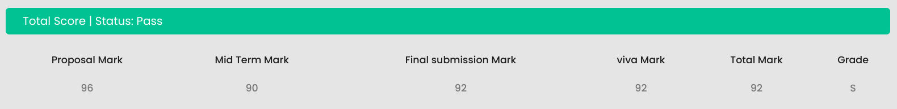

About My Business Data Management (BDM) Project
Greetings! I am thrilled to welcome you to this space dedicated to my Business Data Management (BDM) Project. This endeavor has been a significant milestone in my academic journey at IIT Madras, where I delved into the intricate world of data science and decision-making.
Project Overview:
The BDM Capstone Project is an embodiment of independent research, challenging students to engage with real-world business scenarios. In my case, I collaborated with a Cafe to identify and address pressing issues through the lens of data science.
Project Stages and Achievements:
Proposal (Score: 96): In the initial stage, I presented a comprehensive 4-5 page write-up outlining the organization’s background, the defined problem, my chosen problem-solving approach, and anticipated project outcomes. The remarkable score reflects the dedication and clarity invested in this crucial foundation.
Mid-Term Submission (Score: 90): Building on the accepted proposal, the mid-term submission involved an 8-10 page detailed report. I also shared a video interaction clip with the business owner/manager, supplemented by tangible evidence like pictures and field notes. The score of 90 reflects the commitment to thorough documentation and analysis.
Final Report (Score: 92): The final submission was an exhaustive 18-20 page report, providing an in-depth exploration of the entire project journey. From initial data collection to the interpretation of results, each stage was meticulously covered, resulting in a score of 92.
Viva Voce (Score: 92): The culmination of the project involved a concise yet comprehensive presentation, not exceeding 10 slides. This segment, carrying 20% weightage, was an opportunity to articulate the project’s nuances and insights, earning a score of 92.

Total Project Score: 92
Anonymized Reports and Confidentiality:
You may have noticed that specific project data is not directly shared on this platform. This is in strict adherence to a Non-Disclosure Agreement (NDA) that governs the confidentiality of certain project details. Both the reports and presentation slides have been meticulously anonymized to meet these confidentiality requirements.
Thank you for visiting this repository of my academic exploration. I invite you to explore the anonymized reports and gain insights into the fascinating intersection of data science and real-world problem-solving.
Feel free to reach out if you have any inquiries or if you share an interest in the realms of data science, AI, or any of my other passions.